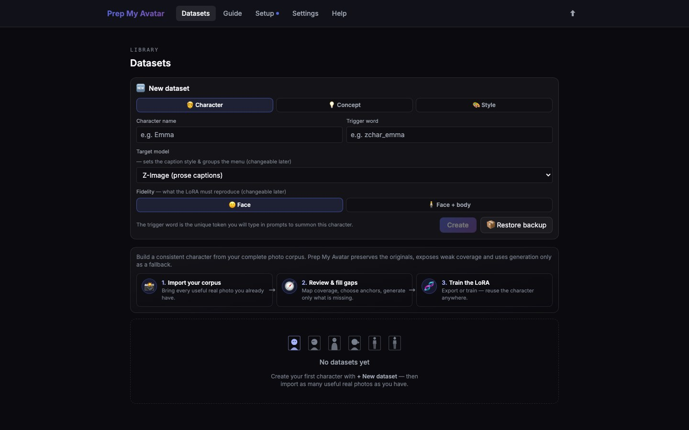

First run · 7 of 21
Step 7: Create a dataset
A dataset is one project containing source images, decisions, captions, and training settings. For a first run with photos of yourself, create a Character dataset.

Before you begin
Decide what the images teach:
- Character teaches a person or face and uses a trigger word in prompts.
- Concept teaches an object, action, effect, or idea.
- Style teaches a visual aesthetic and does not need a prompt trigger.
Do this
- Select Datasets in the top navigation.
- Select + New dataset if the New dataset form is not already open.
- Choose Character, Concept, or Style.
- Enter a clear project name.
- For Character or Concept, enter a distinctive trigger word such as
zchar_alex. Do not use a common word such asperson. - For Concept, describe exactly what the captions must leave out.
- Choose the target model family. If you do not know which one you need, keep the default; you can change it later.
- Leave advanced fidelity choices at their defaults for a first test.
- Select Create.
The remaining first-run pages use a Character dataset because it exposes every dataset step. If you chose Concept or Style, the app omits Character-only pages from its step navigator; this guide still explains why those pages do not apply.
You are finished when
The new dataset opens on Import photos, shown as Step 1 of 14 for a Character dataset. The URL ends in /import, and the step navigator lists every remaining applicable page.